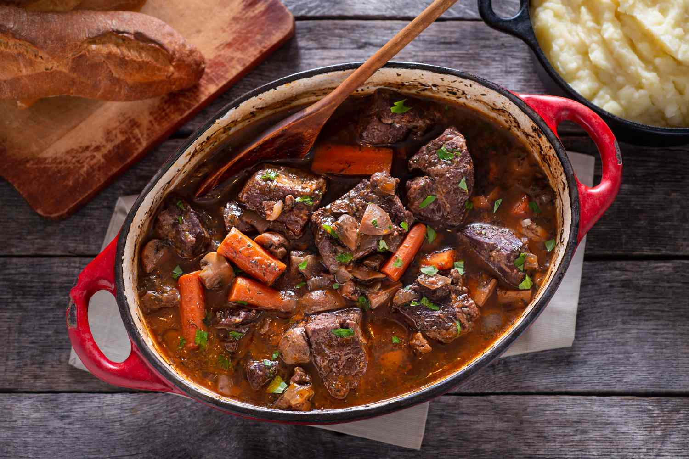

Beef Bourguignon

When Decadence Meets Comfort...
Don't be surprised to see this dish showing up to the table. Though it came from humble beginnings, its become a delicacy in its own right. Between the richly thickened sauce, the hearty beef and the tender vegetables, this medley of flavors is sure to leave you asking for more.
Ingredients
- 2-5 lbs. Beef Roast, completely thawed and allowed to reach room temp.
- 8 oz. Mushrooms
- 2 large Carrots
- 1 small Onion or 1/2 large Onion
- 3 Garlic Cloves
- 1 head of Cauliflower
- 4 tbsp. Honey, plus more to taste
- Wine (ratio of 1 cup wine : 2-2 1/2 lbs. beef)
- Beef Stock, as needed
- Olive Oil, as needed
- Butter, as needed
- Spice Mix: Parsley, Thyme, Sage, Bay Leaf, Salt, and Pepper
Steps
- Place roast in a baking sheet with raised edges.
- Use a meat tenderizer or the bottom side of a pan to tenderize your meat until the surface of the meat has relaxed enough to let the honey soak in better, about 2 minutes (putting some saran wrap on top of the meat for this part is a good idea.) Mix your honey and tbsp. of beef stock, pour it over the roast, and massage it in with your hands for about 1-2 min. Set aside.
- Begin preheating your oven to 400°F. Prep your vegetables starting with the cauliflower: cut the florets down to even sizes, toss in olive oil, salt, and pepper, and set aside on a baking sheet. It's recommened to cut your onions, carrots, and mushrooms into large chunks as they will hold up better in the braising process. Mince your garlic as well, and set aside.
- In the same large pot in which you will be braising the meat, put in about 2 tbsp of butter, and sear the meat on all sides (about 2-3 min. per side.) Return the roast to the same baking sheet where you massaged in the honey.
- Add 2 tbsp of butter to the pot once more, and just as it is melted, add in 2 tbsp of flour. Whisk together to create your roux.
- Stir your wine into the roux, and while it is slowly coming to a boil, saute your veggies in a seperate pan over high heat until they begin to browm. When your wine begins to boil, add the roast and then your browned veggies (scrape in any remaining honey mixture from the baking sheet!) Remember that for braising you want your liquid to reach about 1/3 of the way up the meat.
- Allow the wine to come to a boil once more, reduce heat to a low simmer, and cover the pot. Depending on how large your roast is, your cook time will be anywhere from 30 min. to 2 hrs. Start at 30 min., check your roast at the 30 min. mark, and increase time accordingly.
- Check on your broth to see if adding extra honey is something you want to do, and then add 1 tbsp. at a time. Adjusting to match the cook time of your beef, place the cauliflower in the oven and bake for 25-30 min. or until the edges of the cauliflower are browned. Serve everything hot and enjoy!